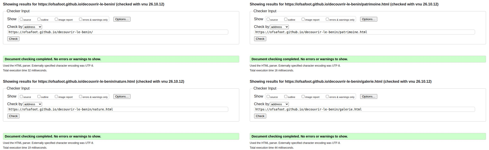
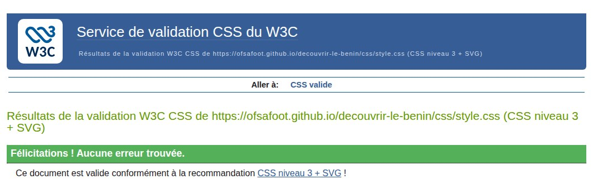
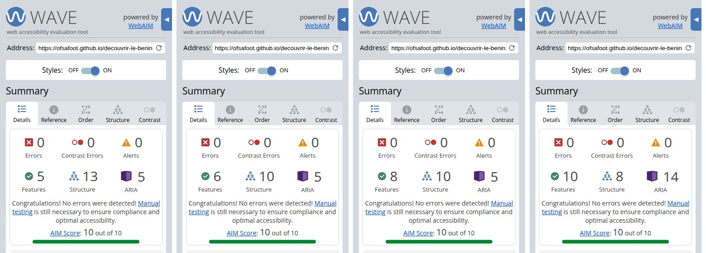
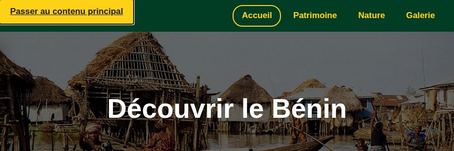
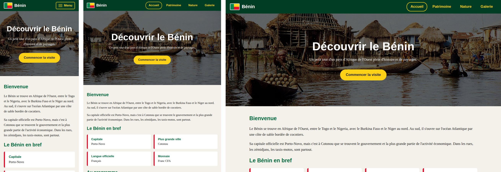
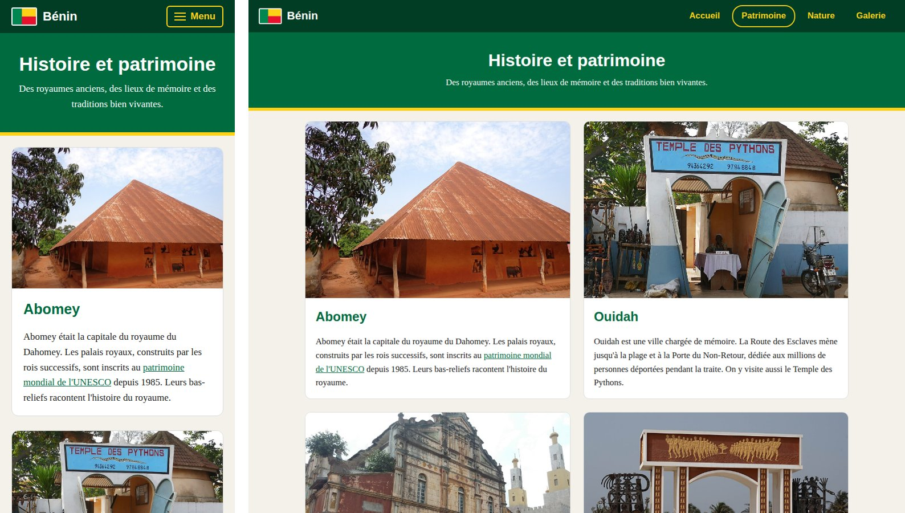
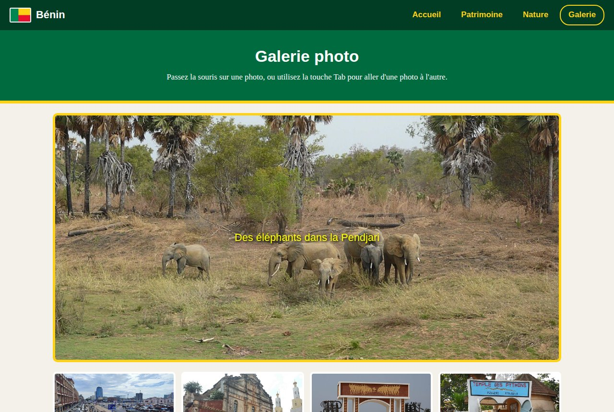
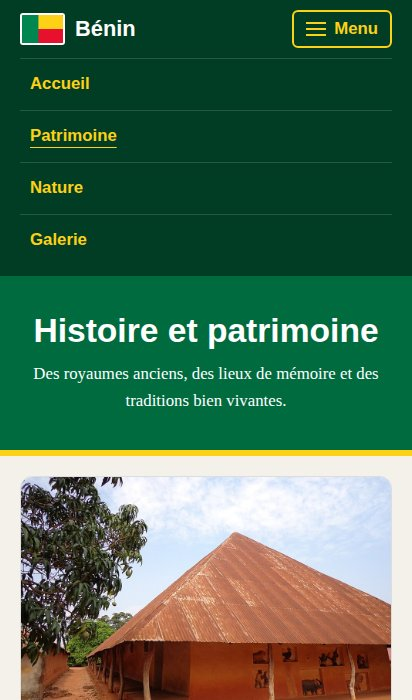
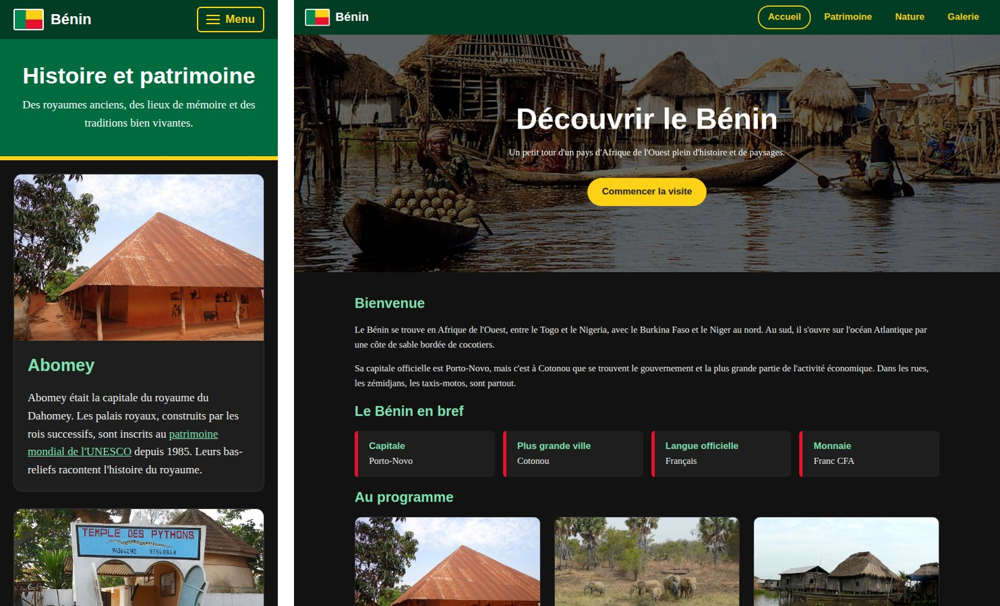

Découvrir le Bénin
Projet de synthèse Web Design for Everybody · Emmanuel Kakpo
Site en ligne : https://ofsafoot.github.io/decouvrir-le-benin/
Code source : https://github.com/ofsafoot/decouvrir-le-benin
Version PDF : télécharger le document (PDF)
Vidéo de démonstration
La vidéo dure 2 min 28 et n'a pas de son : chaque écran a une légende en bas. Elle montre le site réactif, mes quatre extras avec leur code, et les résultats des validateurs W3C et WAVE. Tout ce qu'elle montre est aussi décrit par écrit plus bas.
1. Le projet
« Découvrir le Bénin » présente mon pays en quatre pages. J'ai suivi les esquisses rendues plus tôt dans le cours.
| Page | Contenu |
|---|---|
| Accueil (page d'atterrissage) | Grande image avec un titre animé et un bouton, encadré « Le Bénin en bref », trois cartes vers les sections. |
| Histoire et patrimoine | Abomey, Ouidah, Porto-Novo et la fête du Vodoun, en cartes sur une grille. |
| Nature et paysages | Six photos en flex, puis Ganvié, la Pendjari, les chutes de Kota et la côte. |
| Galerie photo | Galerie interactive à la souris et au clavier, et crédits de toutes les photos. |
Le site utilise un seul fichier CSS (css/style.css) et deux petits fichiers JavaScript
(js/menu.js et js/galerie.js). Les photos viennent de Wikimedia Commons, sous licences
libres. Leurs auteurs sont crédités sur la page Galerie.
2. Validation W3C
Les quatre pages passent le validateur HTML du W3C sans erreur ni avertissement. Captures faites sur le site en ligne :

La feuille de style passe aussi le validateur CSS du W3C :

3. Accessibilité (WAVE)
Les quatre pages ont 0 erreur, 0 erreur de contraste et 0 alerte dans WAVE, avec un score AIM de 10 sur 10.

Ce que j'ai prévu pour l'accessibilité :
- un lien « Passer au contenu principal », caché jusqu'à ce qu'il reçoive le focus ;
- un texte alternatif sur chaque photo, et un
alt=""sur le drapeau du logo, qui est décoratif ; - la page en cours signalée dans le menu avec
aria-current="page"; - des contrastes suffisants dans les deux palettes, claire et sombre ;
- une galerie et un menu utilisables entièrement au clavier.

4. Un site réactif
Le CSS est écrit en mobile-first : les styles de base sont ceux du téléphone, puis deux media queries ajoutent la vue tablette (772 px) et la vue grand écran (992 px).

| Élément | Mobile | Tablette (772 px) | Grand écran (992 px) |
|---|---|---|---|
| Menu | Bouton « Menu » | Liens visibles en ligne | |
| « Le Bénin en bref » | 1 colonne | 2 colonnes | 4 colonnes |
| Cartes de l'accueil | 1 colonne | 2 colonnes, la 3e sur toute la largeur | 3 colonnes |
| Cartes Patrimoine | 1 colonne | 2 colonnes | |
| Photos Nature | 1 par ligne | 2 par ligne | 3 par ligne |
| Miniatures de la galerie | 2 colonnes | 4 colonnes | |

5. Organisation du CSS
Le fichier suit l'ordre de la page : réglages généraux, lien d'évitement, menu, bannières, grilles, galerie, pied de page, puis les media queries. Les couleurs qui changent avec la palette sont des variables CSS, ce qui rend le mode sombre très court. Extrait de la vue tablette :
@media screen and (min-width: 772px) {
.js .menu-btn {
display: none;
}
#menu,
.js #menu {
display: flex;
flex-direction: row;
gap: 6px;
width: auto;
margin: 0;
}
...
.infos,
.cartes,
.grille {
grid-template-columns: 1fr 1fr;
}
.cartes .carte:last-child {
grid-column: span 2;
}
...
}
6. Mes quatre extras
Extra 1 : une galerie photo interactive en JavaScript
Sur la page Galerie, quand on passe la souris sur une miniature, la photo s'affiche en grand avec son texte
alternatif. La galerie marche aussi au clavier : au chargement de la page, une boucle for ajoute
tabindex="0" à chaque miniature, puis onfocus et onblur appellent les
mêmes fonctions que la souris.
<body onload="addTabFocus()"> ... <img class="preview" src="images/pendjari.jpg" alt="Des éléphants dans la Pendjari" onmouseover="upDate(this)" onmouseout="unDo()" onfocus="upDate(this)" onblur="unDo()">
function upDate(previewPic) {
let image = document.getElementById("image");
image.innerHTML = previewPic.alt;
image.style.backgroundImage = "url('" + previewPic.src + "')";
}
function unDo() {
let image = document.getElementById("image");
image.innerHTML = "Survolez une photo ci-dessous pour l'afficher ici.";
image.style.backgroundImage = "url('')";
}
function addTabFocus() {
console.log("Page chargée : ajout de tabindex sur les photos");
let photos = document.querySelectorAll(".preview");
for (let i = 0; i < photos.length; i++) {
photos[i].setAttribute("tabindex", "0");
}
}

Extra 2 : un menu mobile en JavaScript
Sur téléphone, les liens sont remplacés par un bouton « Menu ». Le script ouvre et ferme le menu, met à jour
aria-expanded pour les lecteurs d'écran et ferme le menu avec la touche Échap. Si JavaScript est
désactivé, la classe js n'est pas ajoutée et les liens restent visibles.
document.documentElement.classList.add("js");
window.addEventListener("DOMContentLoaded", function () {
let bouton = document.querySelector(".menu-btn");
let menu = document.getElementById("menu");
bouton.addEventListener("click", function () {
let ouvert = menu.classList.toggle("ouvert");
bouton.setAttribute("aria-expanded", ouvert);
});
document.addEventListener("keydown", function (event) {
if (event.key === "Escape" && menu.classList.contains("ouvert")) {
menu.classList.remove("ouvert");
bouton.setAttribute("aria-expanded", "false");
bouton.focus();
}
});
});

Extra 3 : un mode sombre automatique
Le site suit le réglage clair ou sombre de l'ordinateur ou du téléphone. Comme les couleurs sont des
variables, il suffit de les redéfinir dans une media query prefers-color-scheme. J'ai vérifié les
contrastes dans les deux palettes.
:root {
--fond: #f4f1ea;
--texte: #222222;
--carte: #ffffff;
--lien: #006b3f;
--bordure: #dddddd;
}
@media (prefers-color-scheme: dark) {
:root {
--fond: #121212;
--texte: #eeeeee;
--carte: #1e1e1e;
--lien: #7fe0b0;
--bordure: #333333;
}
}

Extra 4 : des animations et transitions CSS, qui respectent « mouvement réduit »
Le titre, le texte et le bouton de l'accueil apparaissent en glissant vers le haut (@keyframes).
Les cartes se soulèvent au survol, les photos de la page Nature s'agrandissent légèrement et les liens du menu
changent de couleur en douceur. Le bouton « Commencer la visite » descend vers la section « Au programme » avec
un défilement fluide. Si l'utilisateur a activé « réduire les animations », tout cela est désactivé.
@keyframes apparition {
from {
opacity: 0;
transform: translateY(20px);
}
to {
opacity: 1;
transform: translateY(0);
}
}
.carte:hover {
transform: translateY(-6px);
box-shadow: 0 10px 20px rgba(0, 0, 0, 0.15);
}
@media (prefers-reduced-motion: reduce) {
html {
scroll-behavior: auto;
}
*,
*::before,
*::after {
animation: none !important;
transition: none !important;
}
}
7. Comment tester
- Responsive : réduire la largeur de la fenêtre, ou F12 puis Ctrl+Maj+M.
- Clavier : appuyer sur Tab dès le chargement pour voir le lien d'évitement, puis sur la page Galerie pour parcourir les photos.
- Mode sombre et mouvement réduit : F12, menu ⋮, More tools, Rendering, puis « Emulate CSS media feature ».